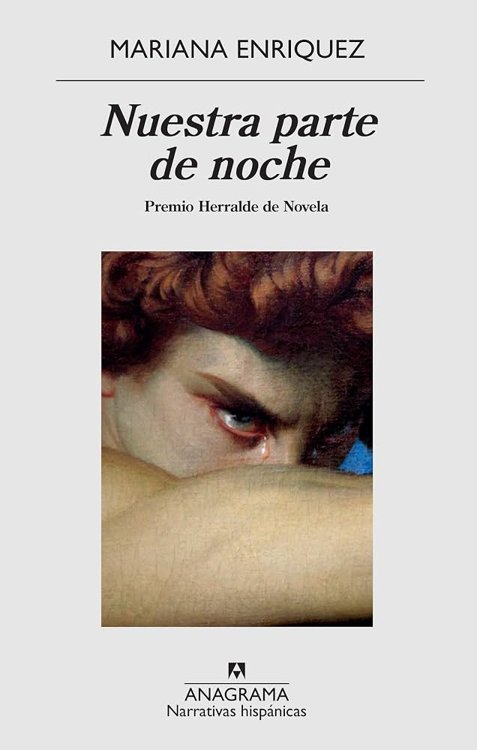

EL ESTANTE COMÚN
Detalles del libro
|
 |
Nuestra parte de nochepor Mariana Enriquez SINOPSISUn padre y un hijo atraviesan Argentina por carretera, desde Buenos Aires hacia las cataratas de Iguazú, en la frontera norte con Brasil. Son los años de la junta militar, hay controles de soldados armados y tensión en el ambiente. El hijo se llama Gaspar y el padre trata de protegerlo del destino que le ha sido asignado. La madre murió en circunstancias poco claras, en un accidente que acaso no lo fue. Como su padre, Gaspar está llamado a ser un médium en una sociedad secreta, la Orden, que contacta con la Oscuridad en busca de la vida eterna mediante atroces rituales. En ellos es vital disponer de un médium, pero el destino de estos seres dotados de poderes especiales es cruel, porque su desgaste físico y mental es rápido e implacable. Los orígenes de la Orden, regida por la poderosa familia de la madre de Gaspar, se remontan a siglos atrás, cuando el conocimiento de la Oscuridad llegó desde el corazón de África a Inglaterra y desde allí se extendió hasta Argentina. |
CALIFICACIONES
10/10
PALABRAS CLAVE
Horror, Ficción histórica, LGBT, Fantasía